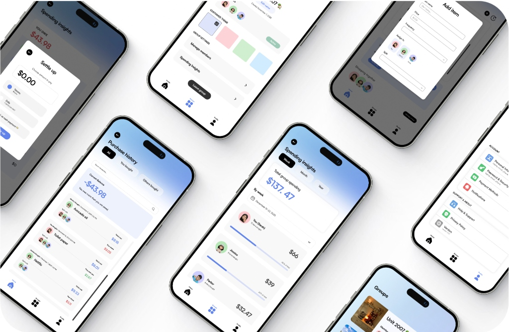

Unifying the fragmented Need → Buy → Split → Settle co-living lifecycle into a single collaborative workspace.
Coordinating a shared home is notoriously messy. Roommates regularly purchase joint supplies (toilet paper, groceries, oil) and split the costs. Through early discovery, we realized that the primary source of frustration isn't calculating the math; it's the extreme workflow fragmentation.
Roommates currently navigate a disjointed ecosystem to complete a single task loop:
Because these tools are disconnected, cohabitants consistently forget to log receipts, lose track of who purchased what, and face uncomfortable money talks. SmartCart unifies this lifecycle into a single workspace.
Following an iterative, human-centered lifecycle to match roommate habits rather than imposing rigid linear workflows.
Instead of a rigid linear pipeline, we followed an iterative human-centered process to ensure our final system aligned with actual co-living workflows:
Validating roommate painpoints through survey analysis, Reddit sentiment scraping, and competitive matrix audits.
We set out to validate the severity of roommate coordination painpoints and map how groups manage shared supplies:
Offloading tracking to the system to eliminate user friction, social awkwardness, and perceived inequity.
Roommates forget transactions because they occur in one app (Venmo/Splitwise) while the physical list is in another (Apple Notes). By integrating list management directly with bill splitting, transactions are logged automatically at the moment of check-off.
Following up for money creates awkward social friction. We need to offload the tracking to the system itself, letting automated, neutral nudges handle requests rather than placing the burden of confrontation on cohabitants.
When contributions aren't visible, roommates build silent resentment. Providing transparent, historical overviews of who purchased what and visual spending distributions fosters cohabitant accountability and trust.
Ensuring robust navigation pathways across the full group list checkout, shopper assignment, and roommate balance updates.
I mapped out the entire lifecycle from group creation, collaborative item additions, shopper assignments, shopping list checkout, to the automatic updating of roommate balances. This structural clarity ensured we didn't leave dead-ends in our navigation pathways.
Partnering with engineering and PM to resolve technical constraints, design hierarchy, and terminology alignment.
I collaborated closely with PM & Engineering to test layout hierarchies, optimize technical feasibility, and align terminology with user expectations:
Optimizing readability and reducing stress through a calming ocean gradient palette and highly legible geometric typography.
Because SmartCart is a utility meant for frequent daily use, it needed to feel lightweight, modern, and readable at a glance in a chaotic grocery store aisle. We analyzed successful consumer tools like Uber (progressive choice disclosure) and Spotify (clean structural scanability).
Translating observational user insights from target testing groups into direct product layout adjustments.
We tested the interactive prototype with 6 target users in realistic grocery scenarios. The testing revealed key friction points:
Users found visual spending graphs confusing without action context; they knew the percentages, but didn't know if they were spending too much.
👉 Response: Added dynamic text insights (e.g., "Spent 12% less on supplies than last month") to explain the graphs.
Roommates struggled to find where to add members or customize settings, expecting immediate access from the Home view.
👉 Response: Positioned a prominent settings gear directly in the top header of the Home screen.
Identical layouts for group lists and personal checklists caused task confusion in testing.
👉 Response: Introduced distinctive headers (lavender-accented for group lists) and unique card templates.
Unifying the lifecycle into cohesive screen interfaces with interactive flow walkthroughs.
Here is how the final product unifies the roommate coordination journey to reduce cognitive and social friction:
Interact with the player below to watch walkthrough screen recordings of the final high-fidelity interactions in action:
Key learnings from translating complex, social workflows into simple, habit-building utility interfaces.
In utility tools, copy clarity is far more critical than visual aesthetics. Clear, descriptive labels eliminate user hesitation and cognitive blockages during active workflows.
Showing raw charts and numbers isn't enough. Translating graph data into a plain-English narrative fits the user's active mental model much better than plain numbers.
Co-living lists are managed on the go. Minimizing path lengths for primary tasks (logging items, claiming shopper duties) drives daily adoption far more than adding niche features.